Google Drive Projects (with Ask Gemini in Drive) let you pin a fixed set of files, folders, or emails as stable sources, then ask synthesis questions across multiple internal documents at once—ideal when presales needs a client-specific proposal or pitch while still aligning with product specs, standard templates, and past meeting notes.
Unlike ad-hoc Gemini chats on single files, a Project does not move original files on Drive; it creates a reusable research frame you can share with the team, resume conversation history, and verify answers through citations back to source Docs. Official documentation: Share Gemini sources using Drive projects, Use Gemini in Drive for research & analysis.
Context: an IT outsourcing team receives an RFP from Nexa Logistics (warehouse visibility MVP). They need a client pitch document in one working session, reusing internal product spec, proposal template, and lessons from the Acme Retail deal.
| Item | Sample value |
|---|---|
| New client (pitch) | Nexa Logistics Co., Ltd. |
| Project | Real-time warehouse stock visibility MVP (WMS integration) |
| Spec file | SPEC_Warehouse_Visibility_MVP_v1.2 |
| Proposal template | TEMPLATE_Proposal_IT_Intake |
| Reference meeting notes | NOTES_Acme_Retail_2026-03-18_REQ_interview |
| Drive Project | Pitch — Nexa Logistics — Warehouse MVP |
| Output | PITCH_Nexa_Logistics_Warehouse_MVP_draft (Google Doc or Word, depending on export) |
Order matters: create folders first, then create Docs inside 00_Internal_Sources, then create the Drive Project.
| Path | Role | Fixed vs parameterized |
|---|---|---|
WS_Sales_Pitch_Sources/00_Internal_Sources | Spec, template, notes—do not edit while running Gemini | Fixed folder name; version in Doc footer |
WS_Sales_Pitch_Sources/10_Client_Outputs | Client-specific pitch drafts | File name: PITCH_{{clientSlug}}_draft |
Projects do not relocate files: when you add sources, original Drive permissions and paths stay the same—suitable for company-wide shared source standards.
Create 3 Google Docs in 00_Internal_Sources using the sample bodies below (expand as needed for your demo):
PRODUCT SPECIFICATION — Warehouse Visibility MVP (v1.2) MVP scope (in) - Web dashboard: SKU on-hand, inbound/outbound (24h rolling). - REST read API from customer WMS (polling 15 min). - RBAC: Ops Manager, Warehouse Lead, Auditor. Out of scope (MVP) - Native mobile apps; ML forecasting. Internal MD reference Work package | Role | MD low | MD high WMS connector | Backend | 18 | 28 Dashboard UI | Frontend | 12 | 18
CLIENT PROPOSAL — {{CLIENT_NAME}}
Executive summary
Client context & objectives
Proposed scope (in / out)
Solution approach
Timeline & milestones
Commercial outline
Risks & mitigations
Next steps
MEETING NOTES — Acme Retail (reference deal) Lessons learned - Confirm integration credential model in first call. - Separate MVP scope from roadmap in writing. - Include explicit support window in commercial section.
Pitch — Nexa Logistics — Warehouse MVP → Create Project.Permissions: collaborators can only analyze file content if they already have View access on Drive. Sharing a Project does not replace sharing the underlying files.
Paste the prompt below into Ask Gemini (full-screen inside the Project). The new client brief is embedded in the prompt—a separate Drive file is optional.
You are helping our presales team draft a client-specific proposal. Use ONLY the pinned project sources (product spec, proposal template structure, past meeting notes) plus this new client brief: --- Client: Nexa Logistics Co., Ltd. Needs: Real-time warehouse stock visibility MVP; WMS integration (OAuth2); web dashboard for Ops/Warehouse Lead/Auditor; target go-live Q3 2026; budget USD 80k–110k; no mobile app in phase 1. --- Tasks: 1) Synthesize relevant capabilities from the product spec that match Nexa's needs. 2) Apply lessons from the Acme Retail meeting notes (scope discipline, auth model, support window). 3) Output a complete proposal draft following the section headers in our proposal template: Executive summary, Client context, Proposed scope (in/out), Solution approach, Timeline, Commercial outline (use internal MD ranges from spec as indicative only), Risks, Next steps. Tone: professional, concise, suitable for B2B logistics. Flag any assumptions that need client confirmation with [CONFIRM].
10_Client_Outputs with the client pitch file name.Based on the draft above, tighten the Commercial outline into a table with 4 work packages and map each to the MD ranges from the product spec. Keep [CONFIRM] flags where budget or WMS API docs are uncertain.
The following is an operational assessment for presales/PM teams—it does not replace legal review or final pricing approval.
| Previous manual step | With Drive Projects + Gemini | Estimated impact |
|---|---|---|
| Open 3–5 Docs one by one and copy-paste into a new proposal | One Project, one synthesis prompt aligned to template | ~40–60% less time for first draft |
| New AE onboarding: unclear which file is “source of truth” | Pinned source list + Project name per deal | Fewer wrong files / missing context on handoff |
| Weekly report: aggregate risks from multiple meeting notes | Cross-file prompt (“top 3 risks across Q2 notes”) | Useful for staff reports, not only client pitches |
Pitch — {Client} — {Offering}.Generated from Project: … | Prompt version: v1.[CONFIRM] items before sending to the client.Screenshots live in images/; detailed capture instructions: HUONG-DAN-DEMO-CHUP-ANH.md (Vietnamese).
Step 1: Open root folder WS_Sales_Pitch_Sources and show 00_Internal_Sources and 10_Client_Outputs.
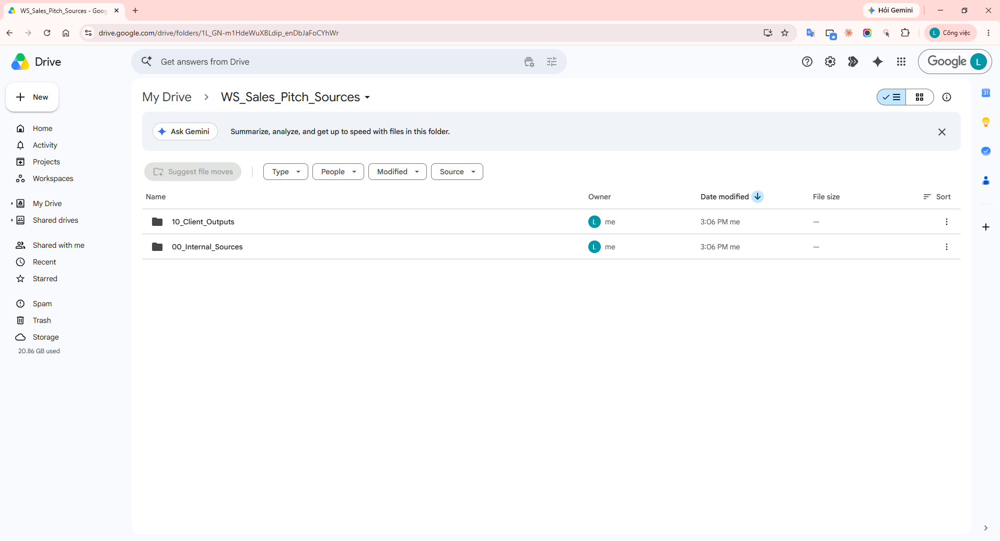
Step 2: Open product spec Doc SPEC_Warehouse_Visibility_MVP_v1.2; show MVP scope and internal MD table.
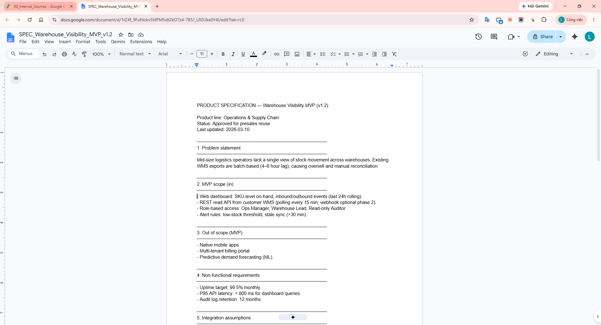
Step 3: Open proposal template TEMPLATE_Proposal_IT_Intake; show all standard section headers.
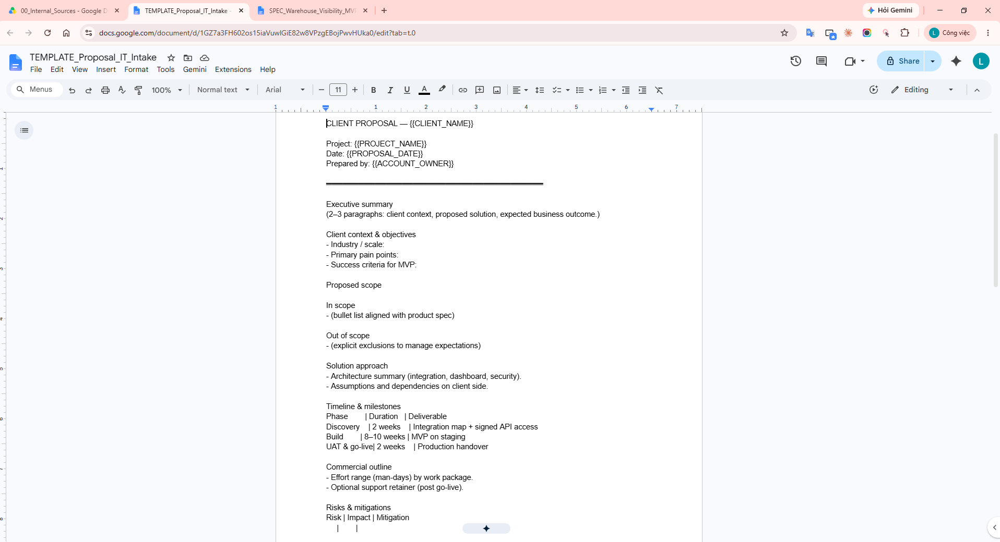
Step 4: Open reference meeting notes NOTES_Acme_Retail_…; highlight Lessons learned.
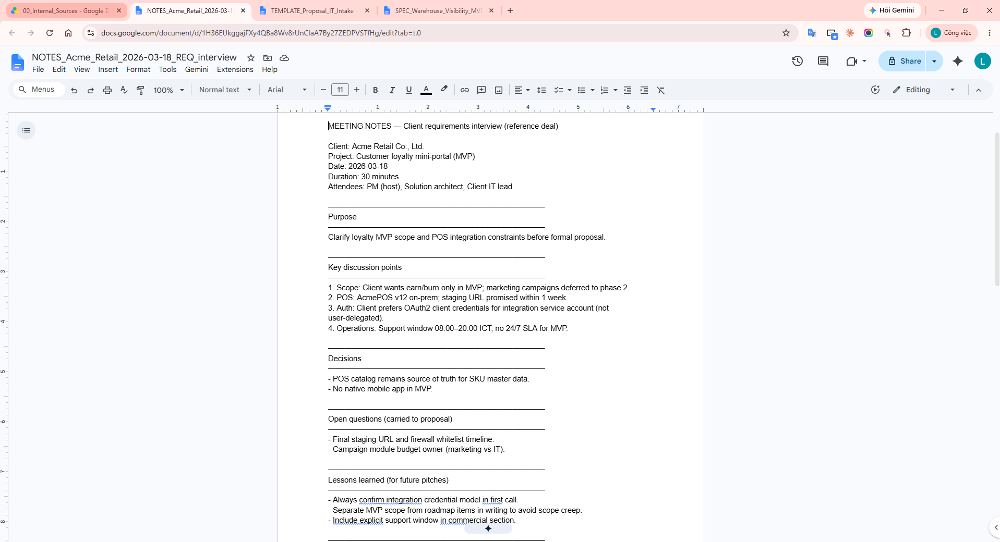
Step 5: On Drive, click New and select Project (or use project.new).
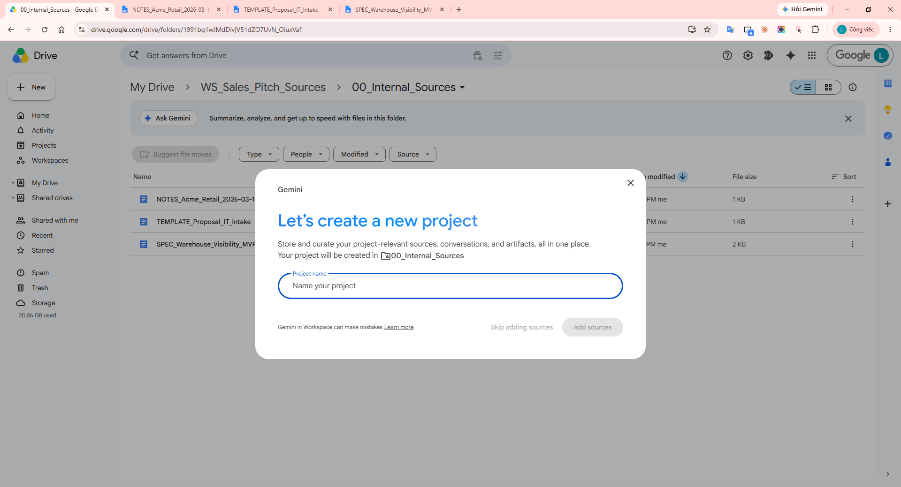
Step 6: Enter Project name Pitch — Nexa Logistics — Warehouse MVP and create the project.
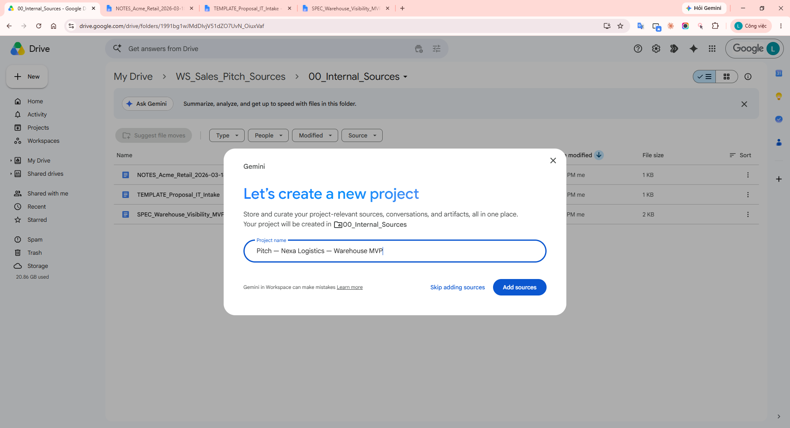
Step 7: Click Add sources and select the 3 files in 00_Internal_Sources.
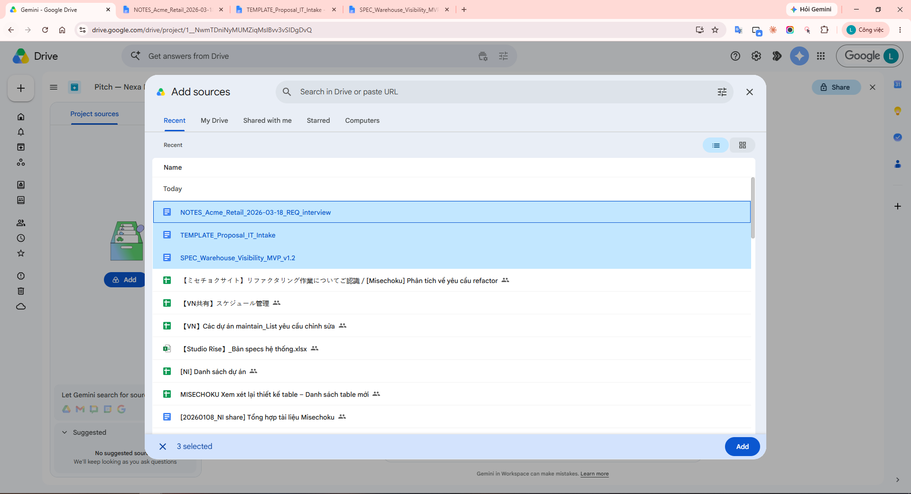
Step 8: Sources panel shows all 3 files with checkboxes enabled (active).
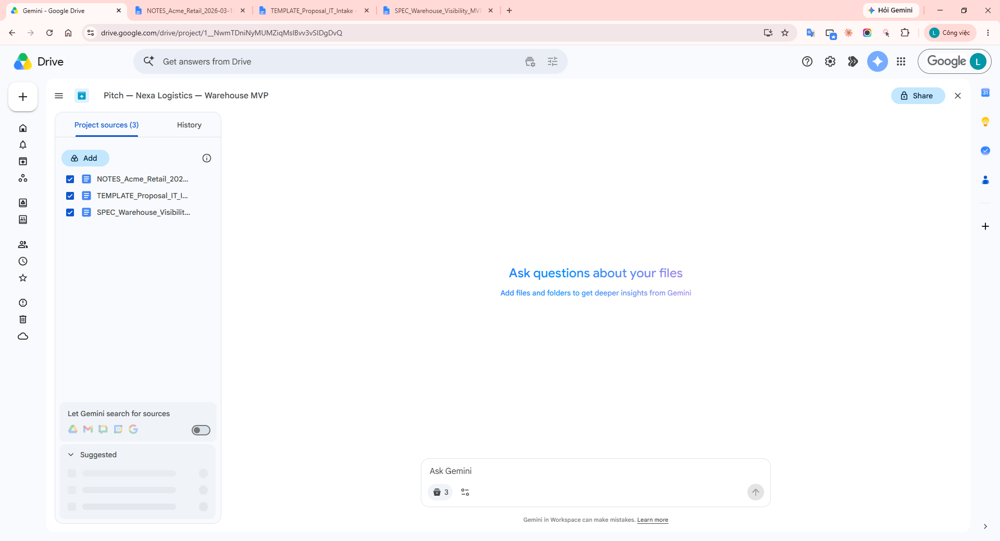
Step 9: Open Ask Gemini in the Project; confirm Sources area and prompt box.
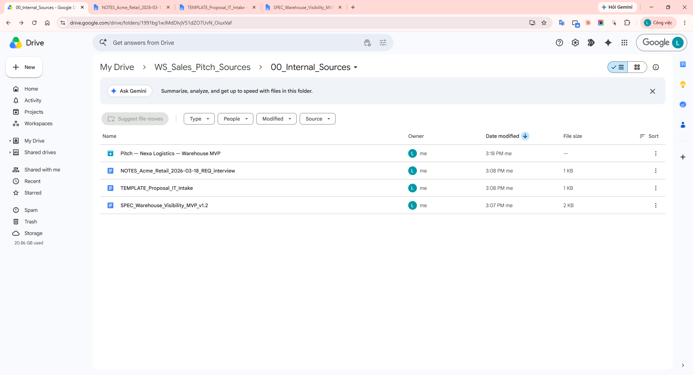
Step 10: Paste the synthesis prompt (Implementation — Step C) into the question box.
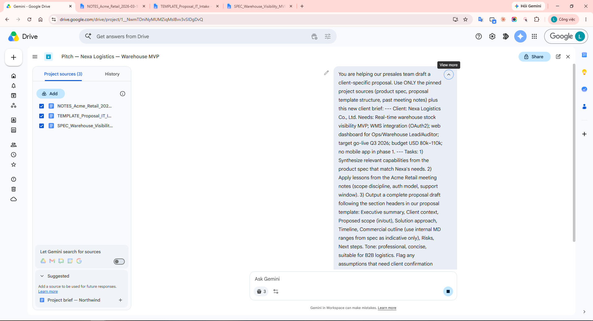
Step 11: Send the prompt; capture the response with citations and proposal sections (Risk table, Next steps, etc.).
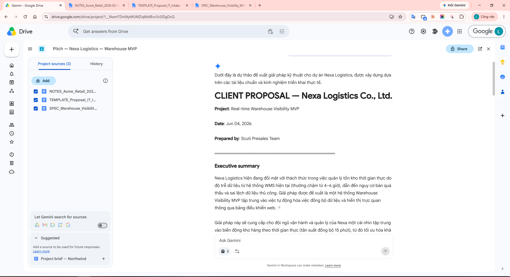
Step 12: In the right Sources used column, click a source file name (e.g. spec) to open the Doc and verify content. If inline [1], [2] appear, click those too. Do not click Export yet (Step 13).
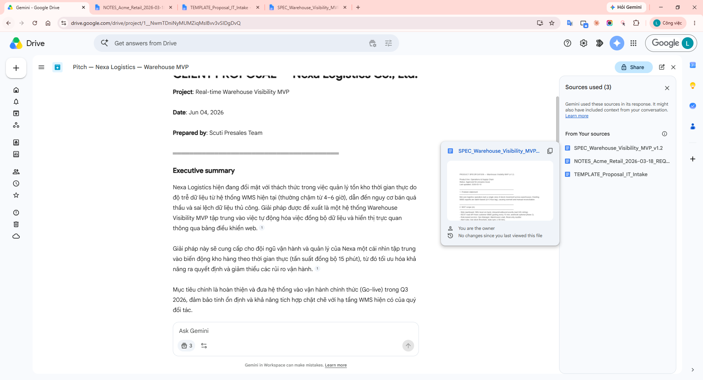
Step 13: Below Gemini’s response, click Export to Docs (not Export to Sheets—Sheets only exports a table such as Risks). Some tenants produce Word (.docx); move/rename to 10_Client_Outputs as PITCH_Nexa_Logistics_Warehouse_MVP_draft.
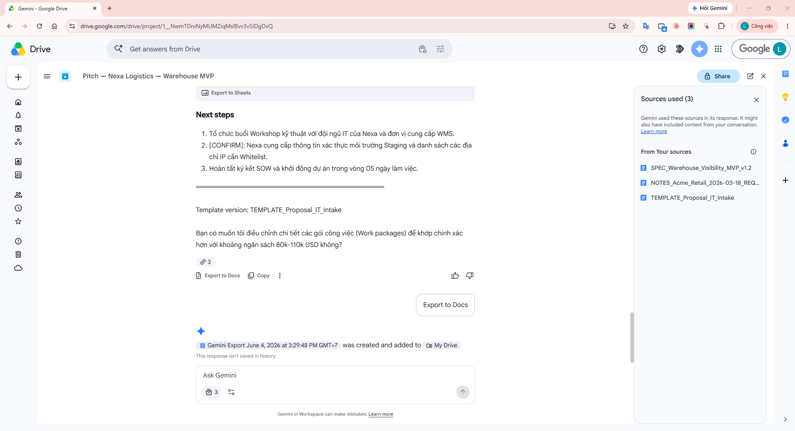
Step 14: Open PITCH_Nexa_Logistics_Warehouse_MVP_draft; confirm Nexa-specific Executive summary, scope, timeline, etc.
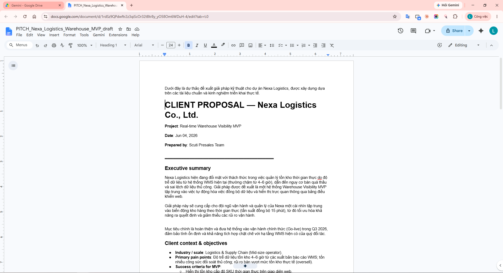
Step 15: Temporarily uncheck one source (e.g. meeting notes) and ask a short follow-up to show scope control.
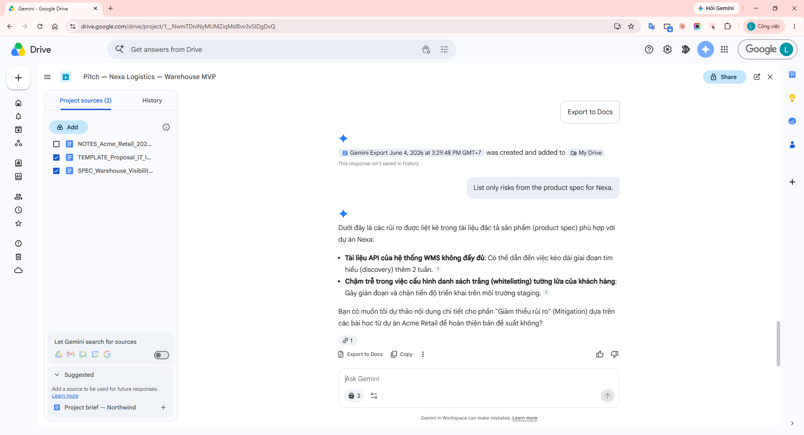
Step 16: Drive → Projects → open History and show the conversation you just ran (resume research).
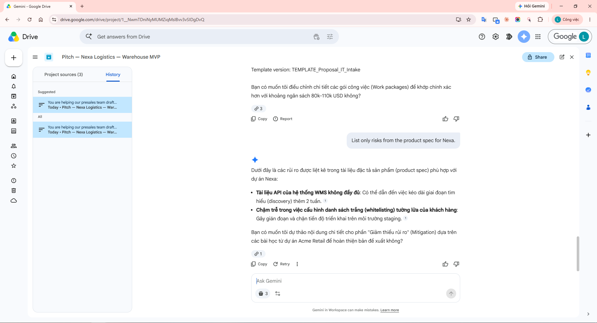
| Risk | What you observe | Mitigation |
|---|---|---|
| Drive permissions | Collaborator opens Project but Gemini cannot read source file content. | Share underlying files first; use a presales Drive group. |
| Wrong or stale sources | Old spec still pinned → pitch proposes out-of-scope features. | Version in file names; quarterly review of pinned sources. |
| Over-trusting output | MD/budget numbers from spec misapplied to the new client context. | Mandatory PM review + [CONFIRM] tags; never send raw Gemini output to clients. |
| Sharing Project vs chat | Sharing a Project shares the source list only; chat history stays private. | Export to Doc/Word before internal handoff. |
Drive Projects turn scattered internal files into a controlled context for Ask Gemini—well suited for client-specific pitches and proposals that still align with product specs, templates, and prior deal experience. Combined with citations, source toggles, and PM review, sales teams can shorten first-draft time while improving traceability compared to manual copy-paste or sourceless chat.